長期トレンド
JKMとJEPXシステムプライスの推移グラフ
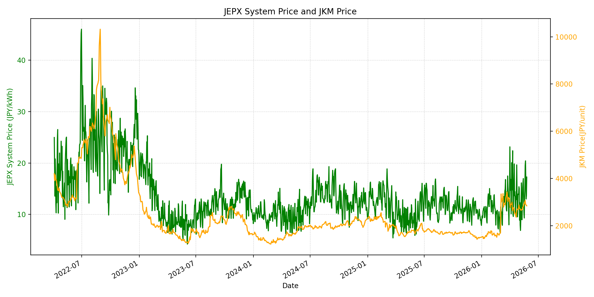
WTIの推移グラフ
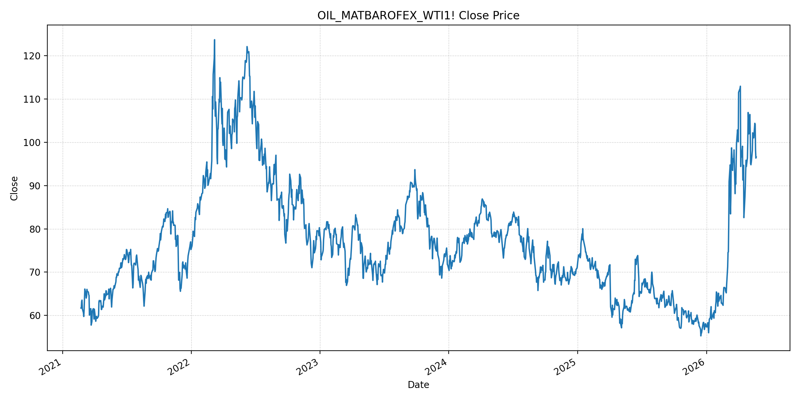
JEPXエリアプライスグラフ（直近一年分）
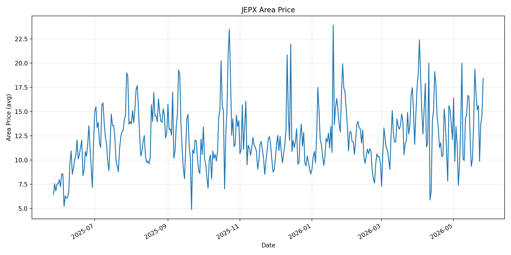
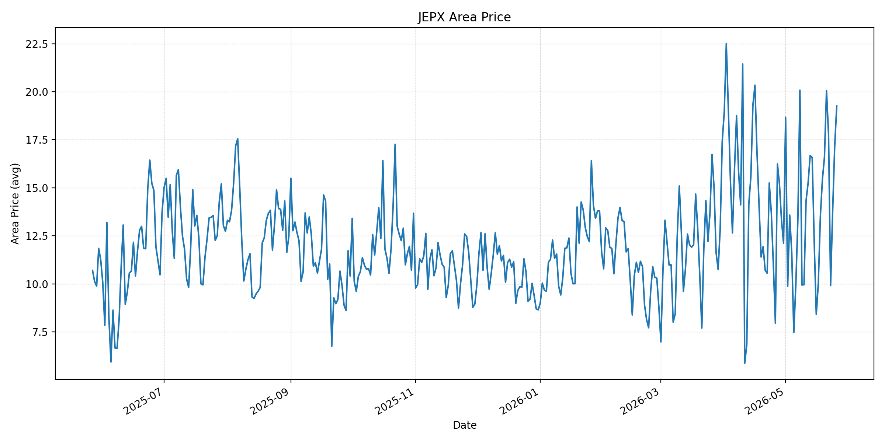
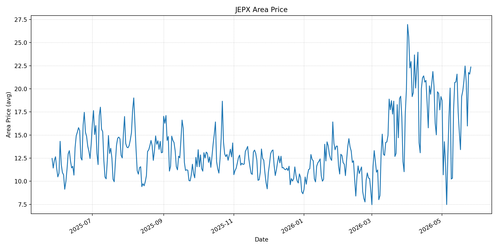
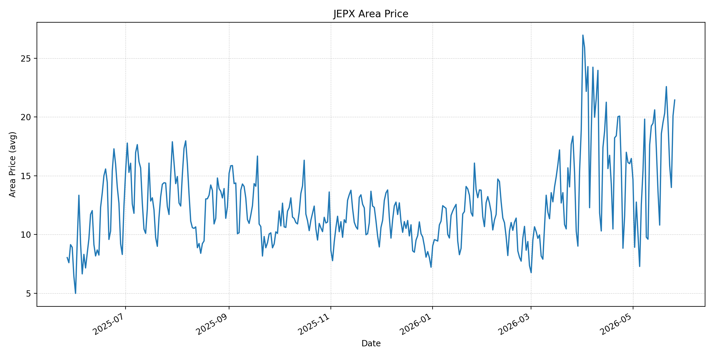
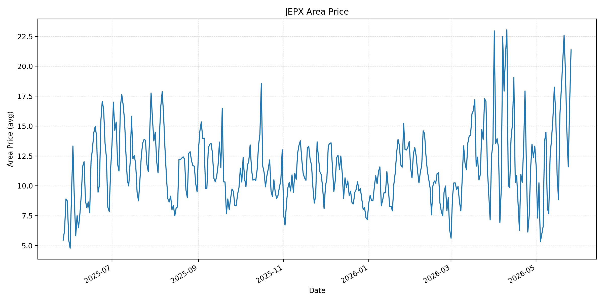
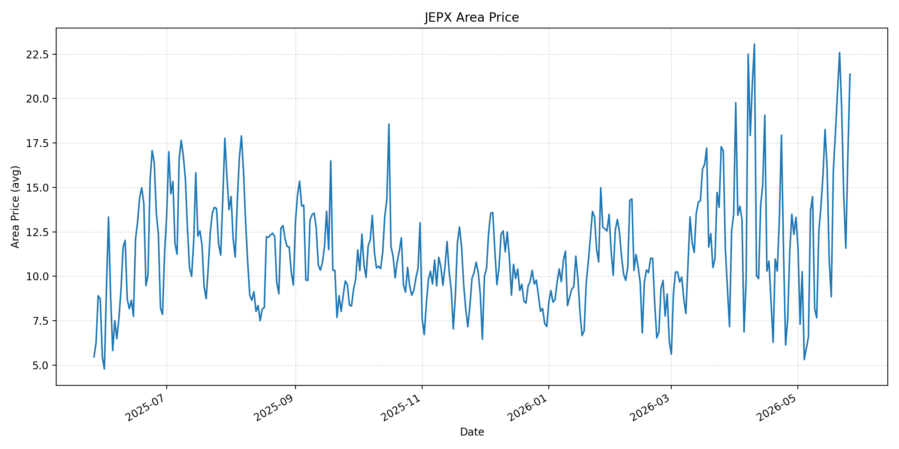
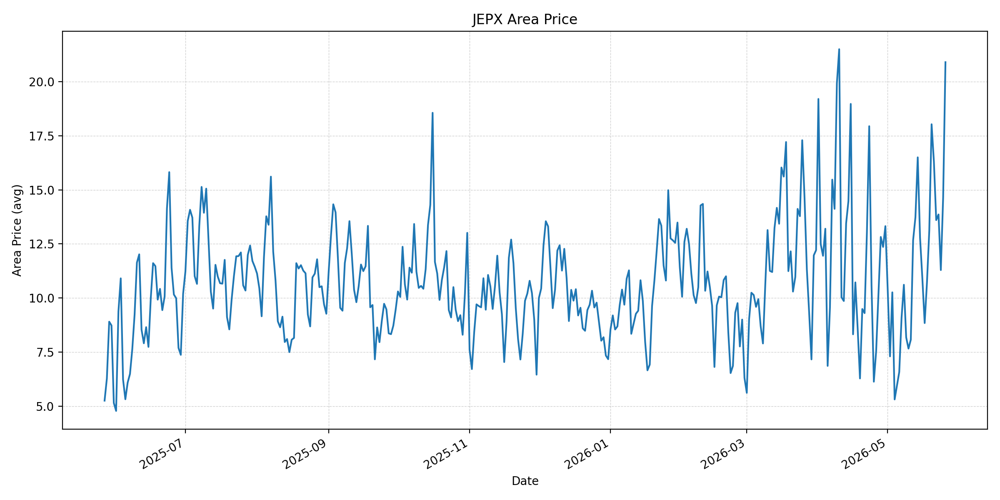
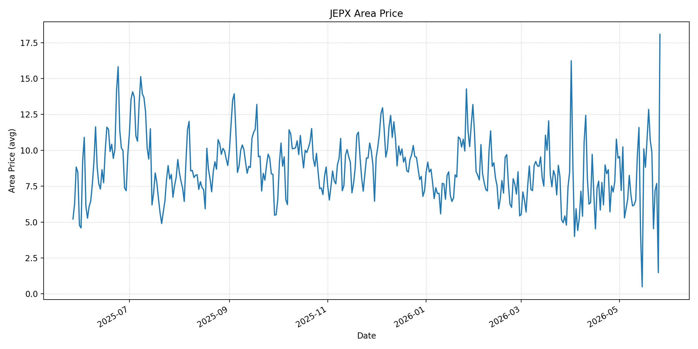
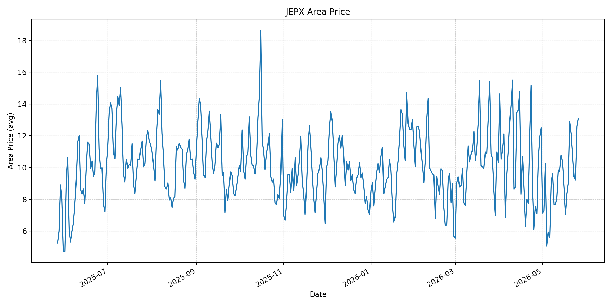
短期トレンド
JKMとJEPXシステムプライスの推移グラフ
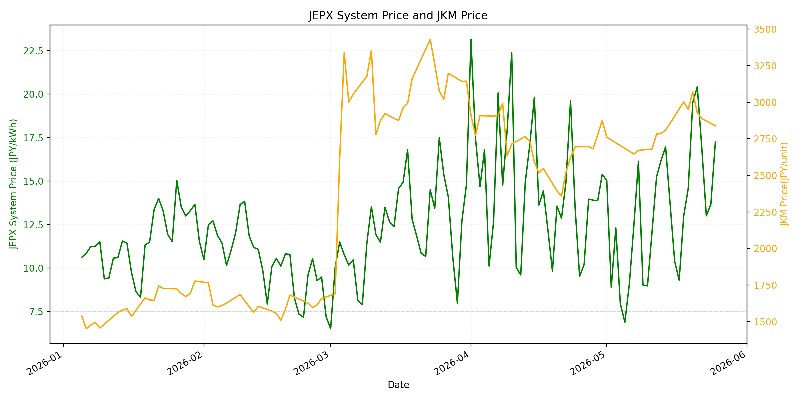
WTIの推移グラフ

JEPXシステムプライス
JEPXは受渡日ベースの最新非空値で評価しています。最新値は 2026-05-26 分です。先週終値は 2026-05-19 時点の直近値、先月終値は 2026-04-30 時点の直近値で評価しています。
| エリア | 当日価格 | 前日価格 | 前日比（％） | 先週終値 | 先週比（％） | 先月終値 | 先月比（％） | 過去最高値 | 最高値比（％） |
|---|---|---|---|---|---|---|---|---|---|
| システム | 21.20 | 17.27 | 22.76 | 14.57 | 45.50 | 15.39 | 37.75 | 64.06 | -66.91 |
| 北海道 | 18.43 | 14.58 | 26.41 | 19.37 | -4.85 | 12.11 | 52.19 | 73.92 | -75.07 |
| 東北 | 19.25 | 17.14 | 12.31 | 15.44 | 24.68 | 12.11 | 58.96 | 84.92 | -77.33 |
| 東京 | 22.36 | 21.59 | 3.57 | 19.77 | 13.10 | 19.16 | 16.70 | 86.13 | -74.04 |
| 中部 | 21.45 | 20.11 | 6.66 | 19.55 | 9.72 | 16.47 | 30.24 | 52.06 | -58.80 |
| 北陸 | 21.37 | 16.85 | 26.82 | 18.05 | 18.39 | 13.32 | 60.44 | 46.48 | -54.03 |
| 関西 | 21.37 | 16.85 | 26.82 | 18.05 | 18.39 | 13.32 | 60.44 | 46.48 | -54.03 |
| 中国 | 20.90 | 14.65 | 42.66 | 13.12 | 59.30 | 13.32 | 56.91 | 46.48 | -55.04 |
| 四国 | 18.08 | 1.48 | 1121.62 | 12.85 | 40.70 | 9.46 | 91.12 | 46.48 | -61.11 |
| 九州 | 13.11 | 12.60 | 4.05 | 9.04 | 45.02 | 12.50 | 4.88 | 40.54 | -67.66 |
LNG先物価格
最新値は 2026-05-25 の LNG(close) です。先週終値は 2026-05-18 時点の直近値、先月終値は 2026-04-30 時点の直近値で評価しています。
| 当日価格 | 前日価格 | 前日比（％） | 先週終値 | 先週比（％） | 先月終値 | 先月比（％） | 過去最高値 | 最高値比（％） |
|---|---|---|---|---|---|---|---|---|
| 2839.00 | 2888.00 | -1.70 | 3003.00 | -5.46 | 2874.00 | -1.22 | 10319.00 | -72.49 |
石油先物価格
最新値は 2026-05-22 の OIL(close) です。先週終値は 2026-05-15 時点の直近値、先月終値は 2026-04-30 時点の直近値で評価しています。2026年5月25日以降の原油急落報道は、まだ本CSVのOIL(close)には反映されていません。
| 当日価格 | 前日価格 | 前日比（％） | 先週終値 | 先週比（％） | 先月終値 | 先月比（％） | 過去最高値 | 最高値比（％） |
|---|---|---|---|---|---|---|---|---|
| 96.60 | 96.35 | 0.26 | 101.02 | -4.38 | 105.07 | -8.06 | 123.70 | -21.91 |
ニュース
イラン情勢に関するニュース
- 2026年5月26日、ABC Newsは、米中央軍がイラン南部のミサイル発射拠点と機雷敷設を試みた船舶を標的に自衛目的の攻撃を行ったと報じました。停戦中の抑制姿勢を強調しつつも、軍事リスクは残っています。 参照: ABC News, 2026-05-26
- 2026年5月25日、APは、米国とイランが戦争終結、ホルムズ海峡再開、イランの高濃縮ウラン放棄を含む合意に近づいていると報じました。ただし、トランプ大統領は合意を急がない姿勢も示しています。 参照: AP, 2026-05-25
ホルムズ海峡経由の石油・LNGに関するニュース
- 2026年5月26日、Reutersは、日経報道を受け、米国とイランが敵対行為終了後30日程度でホルムズ海峡を再開する案を協議しているとの見方から、米原油先物がアジア時間序盤に6％超下落したと報じました。 参照: Reuters/Investing.com, 2026-05-26
- 2026年5月26日、ABC Newsは、イランがホルムズ海峡を通る湾岸船舶への管理を維持しており、米国によるイラン港湾封鎖も続いていると報じました。再開協議は価格下押し要因ですが、通航リスクはまだ解消していません。 参照: ABC News, 2026-05-26
ホルムズ海峡経由でない石油・LNGに関するニュース
- 2026年5月25日、FNNは、日本政府が中東以外では米国などからの原油代替調達を進め、6月には代替調達を8割程度まで引き上げる見通しを示したと報じました。ナフサ供給も従来の8割超まで回復したとされています。 参照: FNNプライムオンライン, 2026-05-25
- 2026年5月26日、ABC Newsは、豪州政府がLNG輸出業者に輸出量の20％相当を国内市場へ供給させる案を示したと報じました。豪州LNGはホルムズ非経由の重要供給源であり、輸出契約や投資姿勢への影響はアジアLNG市場の注視点です。 参照: ABC News, 2026-05-26
日本国内のイラン戦争に関係するニュース
- 2026年5月25日、FNNは、高市首相が中東情勢に伴う物価高対応として3兆円強の補正予算案を編成し、7月から9月の電気・ガス料金を標準家庭で3カ月計5000円程度引き下げる方針を示したと報じました。 参照: FNNプライムオンライン, 2026-05-25
- 2026年5月25日、nippon.comは、首相が来春まで石油の安定供給を確保できるとの認識を示し、ナフサ由来の石油製品も年越し供給が可能だと述べたと報じました。政府は省エネ呼びかけも続ける方針です。 参照: nippon.com/時事通信, 2026-05-25
インサイト
ニュース事項による日本の電力市場への影響（短期：数日〜1週間）
- JEPXシステムプライスは 21.20 円/kWhで前日比 22.76%、先週比 45.50%、先月比 37.75% です。原油先物はホルムズ再開協議で下落しましたが、CSV上のJEPXはまだ上昇しており、燃料価格より需給・エリア制約の影響が短期では強く出ています。
- LNGは 2839.00 と前日比 -1.70%、先週比 -5.46% です。豪州LNG輸出規制案は即時の日本向け供給減ではありませんが、非ホルムズ供給源の政策リスクとして、JKM心理を下支えしやすい材料です。
- 東京 22.36、中部 21.45、北陸・関西 21.37 に対し、九州は 13.11 です。米軍攻撃と海峡管理継続の報道があるため、数日から1週間は原油安だけでJEPXが下がると見るより、東日本・中西日本の高値持続リスクを優先して見る局面です。
ニュース事項による日本の電力市場への影響（長期：1ヶ月〜半年）
- OILはCSV最新値で 96.60、先月比 -8.06% です。5月25日以降の原油急落が今後データに反映されれば燃料費上振れ圧力は和らぎますが、ホルムズ再開が合意後30日程度という前提なら、1ヶ月程度は物流・保険・船腹コストが残りやすいです。
- 政府の米国などからの代替調達と電気・ガス料金支援は、家計と石油製品供給のショックを緩和します。ただし、補助は小売料金の緩衝材であり、JEPXの卸価格や燃料在庫コストを直接下げるものではありません。
- システム価格は過去最高値比では -66.91% と低いものの、先月比では全エリアで上昇しています。1ヶ月から半年では、和平合意の進展で原油リスクが低下する一方、LNG非ホルムズ供給の政策リスクと国内夏季需要が残るため、調達判断は平均価格だけでなく地域別・燃種別に分けて管理する必要があります。